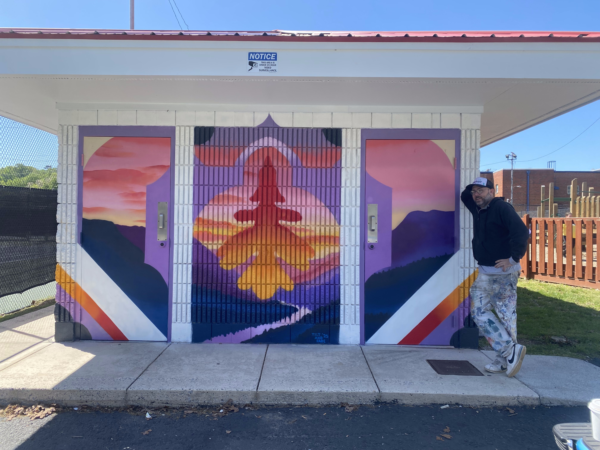
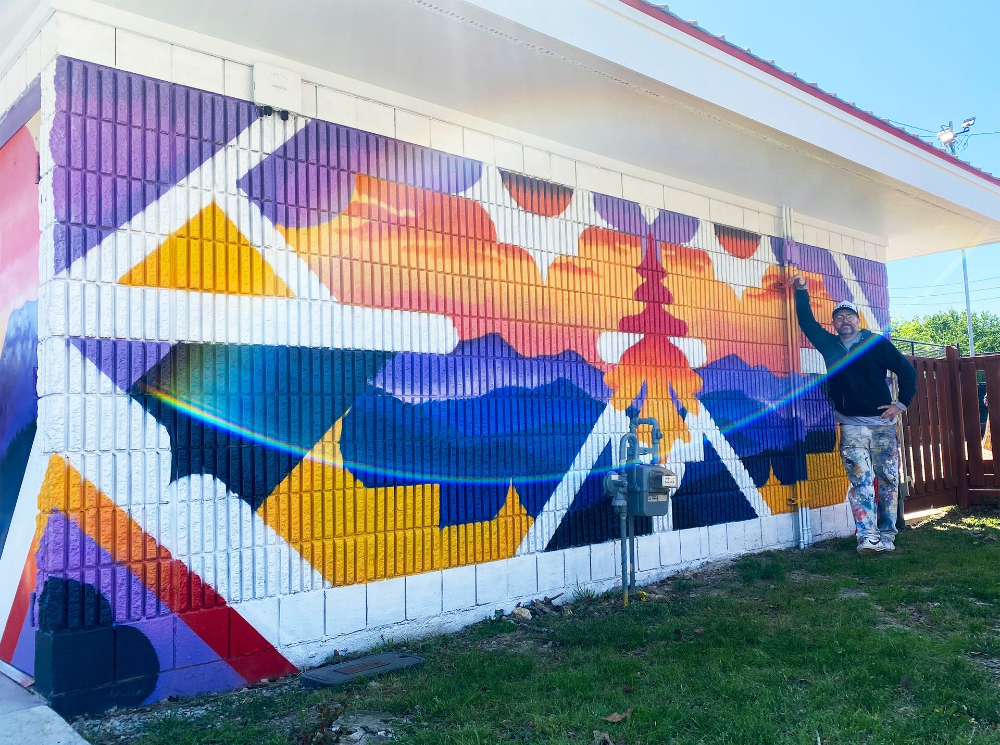
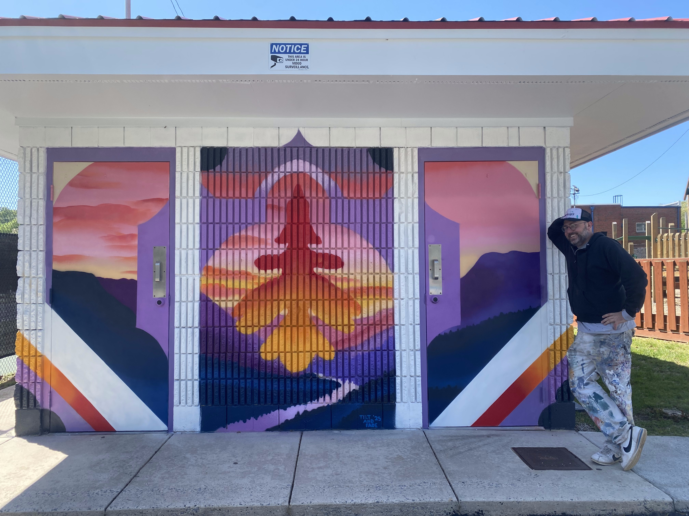
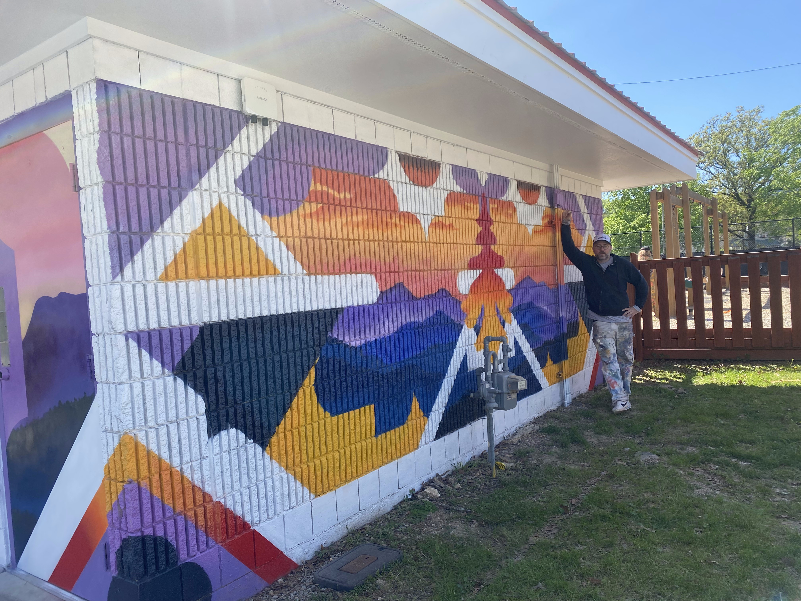

"I felt I was ascending into the upper foothills of the Appalachians. The work had to carry that sense of arrival."
My first municipal public art commission. The City of Red Bank selected me to paint four walls on a single building just north of Chattanooga, at the edge of the Tennessee River valley, where the land begins to lift into the Appalachian foothills.
Driving in from Atlanta, I felt that ascent in the body before I could name it. The work became an attempt to hold that feeling on the wall. Four interpretations of the same mountain sunset, four angles on the same moment, blending Art Nouveau, Art Deco, and contemporary street art in the way I've been working toward for years.
Across all four walls I kept the color red central and prominent — a direct homage to the city's name. I pulled the oak leaf in as a reference to Red Bank's former identity, Red Bank-White Oak, and kept it in autumn red to acknowledge that transition. The underlying geometry is derived from the building's architecture itself, so that the shapes stay in conversation with the structure they live on rather than competing with it.
A municipal commission is a different kind of trust than a private one. You're painting something the whole town walks past. I wanted a piece that earned its place there — legible, specific, unmistakably of the place it lives in.



